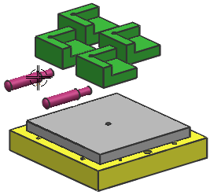

查看装配结构
-
在装配导航器中，右击其中一个 des03_tool_locator_pin 节点并选择打包。
 xxx_assembly1
xxx_assembly1 des03_tool_baseplate des03_tool_workpiece des03_tool_locator x 4 des03_tool_locator_pin x 2
des03_tool_baseplate des03_tool_workpiece des03_tool_locator x 4 des03_tool_locator_pin x 2 -
在装配导航器中，拉动滚动条直到看见数量列 。
如果您没有看见数量列，可以右击装配导航器的背景并选择列以查看哪些列被激活。
在数量列下，您新建的装配文件有一个数目9，它是由一个装配文件加上其余八个组件组成的。

-
保存装配并关闭所有部件。